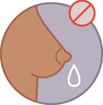
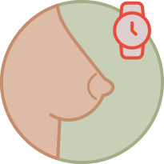
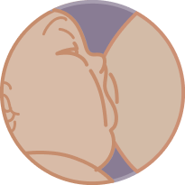
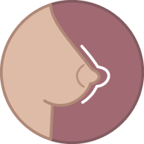
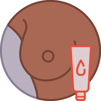
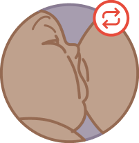
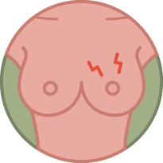
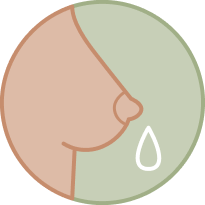

-

“Interrompa o aleitamento materno por algum tempo para descansar o mamilo“
Essa não é uma boa medida. Pode causar ingurgitamento mamário, dificultando a pega. Além disso, a produção de leite diminuirá se a mama não for esvaziada.
-

“Aumente os intervalos entre as mamadas e limite o tempo das mamadas”
Essa não é uma medida recomendada. A limitação das mamadas não ajudará se o que está causando o trauma mamilar não for solucionado. Um minuto de sucção com pega incorreta pode machucar a mama, enquanto 20 minutos de sucção com pega adequada não causam danos à mama.
-

“Veja se Alice está pegando o peito de forma adequada”
Pega inadequada é a causa mais comum de trauma mamilar. Por isso, se for identificada pega inadequada, a sua correção provavelmente irá solucionar o problema. No caso de Juliana, foi observado que o ingurgitamento mamário impedia a pega adequada, o que provavelmente causou o trauma mamilar. Assim, o tratamento do ingurgitamento servirá também para o tratamento das rachaduras.
-

“Use um intermediário (bico de silicone)”
O intermediário (também conhecido como bico de silicone ou protetor de mamilo) não deve ser utilizado de rotina. Na realidade, pode ser a causa do problema. Alguns protetores fazem com que a mama seja menos estimulada, o que pode diminuir a produção do leite.
-

“Hidrate os mamilos”
Hidratar os mamilos pode ser útil e trazer algum conforto para algumas mulheres com trauma mamilar. Juliana pode aplicar o seu próprio leite nos mamilos após as mamadas para lubrificar e hidratar o tecido dos mamilos. Uso de cremes não é recomendado. No entanto, a lanolina anidra purificada também pode ser usada para hidratar os mamilos. É importante ressaltar que não há comprovação científica quanto aos benefícios do uso do leite materno ou da lanolina no tratamento de fissuras mamárias. Mas essas medidas não são prejudiciais caso a mulher queria fazer uso. Já o tratamento seco (banho de sol, banho de luz, secador de cabelos), bastante popular no passado, não tem sido mais recomendado porque acredita-se que a cicatrização de feridas é mais rápida se a lesão estiver hidratada. O calor desidrata a lesão.
-

“Varie a posição para amamentar”
Essa é uma medida útil. Usando uma posição diferente da habitual provavelmente a boca e a língua da criança não exercerão tanta pressão na área machucada.
-

“Comece a mamada na mama que dói menos”
Essa é uma medida recomendada porque no início da mamada a criança tem mais fome e costuma mamar com mais força, intensificando a dor na região machucada.
-

Retire um pouco de leite antes das mamadas
Retirar manualmente um pouco de leite antes da mamada, o suficiente para desencadear o reflexo de ejeção do leite, pode ser útil, pois evita que a criança sugue com muita força no início da mamada para desencadear o reflexo.
-
“Coloque casca de banana ou mamão ou chá nas lesões”
O uso remédios caseiros é desaconselhado pelo risco de alergias e contaminação. Além disso, não há comprovação de que funcionam.